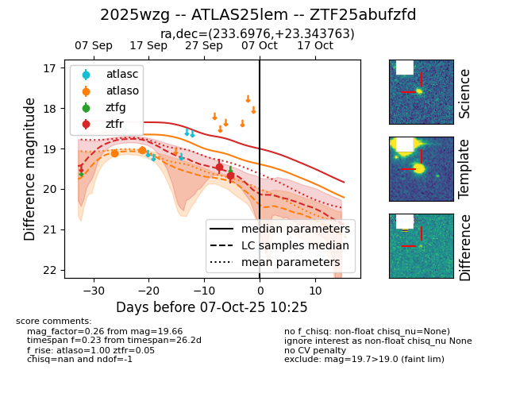
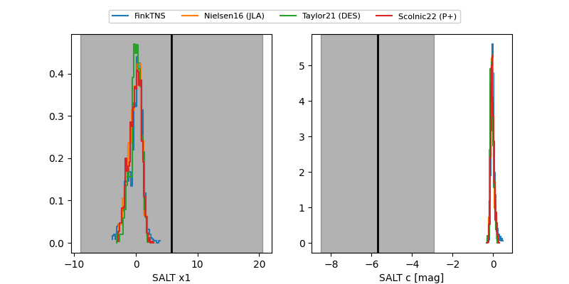

FINK: ZTF25abufzfd
Lasair: ZTF25abufzfd
ALeRCE: ZTF25abufzfd
TNS: 2025wzg
YSE: 2025wzg
ZTF25abufzfd (ztf,fink)
2025wzg (tns,yse)
ATLAS25lem (atlas)
equatorial (ra, dec) = (233.6976,+23.34376)
galactic (l, b) = (36.3552,+53.02476)


last atlaso=19.03, ztfr=19.66
2 atlaso, 2 ztfr detections